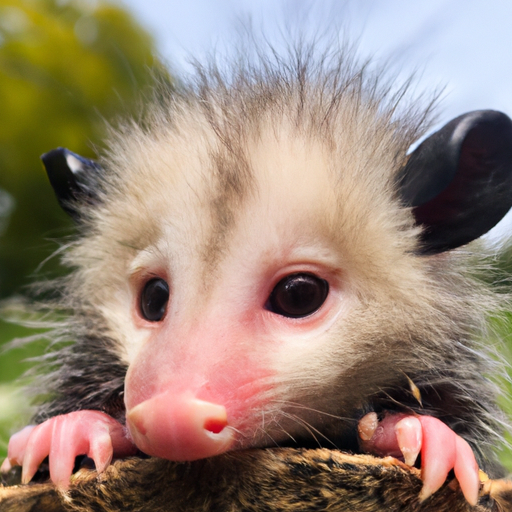

- Late-Night Poutine: A Garbage Can Delight
- The Marvelous World of Bagel Crumbs
- Pizza Crust Paradise: A Savory Surprise
- Fruit Salad Fiesta: A Sweet and Tangy Treat
About Me
Hi there! My name is Beauregard, but my friends call me Bo. I'm a mother opossum living in Toronto, and I love exploring the city with my family. Opossums may be rare in Toronto, but we're a hardy bunch!
My Hobbies
- Foraging for food in the city
- Snuggling with my babies
- Playing dead to avoid predators (just kidding!)
My Kids
I have a few kids who keep me on my toes:
- Bingo
- Bongo
- Bojangles
- Bogart
- Bolé
I love my little ones to bits, even when they keep me up all night with their antics. We like to spend our time exploring the city and trying out new foods. I'm so proud of each and every one of them!
Links
Check out some of my favorite sites:
Thanks for stopping by! Hope to see you around the city soon.
Meet the Kids
- Bingo: The eldest of my brood, Bingo is a natural leader with a love for berries and a talent for climbing. He aspires to be a wildlife biologist when he grows up.
- Bongo: Bongo is the middle child, and often the most mischievous. He loves snacking on insects and playing hide and seek with his siblings. His life aspiration is to be an acrobat in the circus.
- Bojangles: Bojangles is the only girl in the litter, and the most curious. She enjoys exploring new places and trying new foods, and has a special fondness for sweet potatoes. She dreams of being a travel writer when she grows up.
- Bogart: Bogart is the shy one of the group, but has a big heart. He loves nothing more than cuddling with his siblings and snacking on mushrooms. He aspires to be a poet when he grows up.
- Bolé: The youngest of the litter, Bolé is full of energy and loves to play. His favourite food is bananas, and his favourite activity is wrestling with his siblings. He aspires to be a professional wrestler when he grows up.
Bingo
- Birth order: 1
- Personality: natural leader
- Favourite food: berries
- Hobby: climbing
- Dream: wildlife biologist
Bongo
- Birth order: 2
- Personality: mischievous
- Favourite food: insects
- Hobby: playing hide and seek
- Dream: acrobat in the circus
Bojangles
- Birth order: 3
- Personality: curious
- Favourite food: sweet potatoes
- Hobby: exploring new places
- Dream: travel writer
Bogart
- Birth order: 4
- Personality: gentle
- Favourite food: mushrooms
- Hobby: cuddling with siblings
- Dream: poet
Bolé
- Birth order: 5
- Personality: energetic
- Favourite food: bananas
- Hobby: wrestling with siblings
- Dream: professional wrestler
I'm so proud of my little ones and can't wait to see what they accomplish in life.